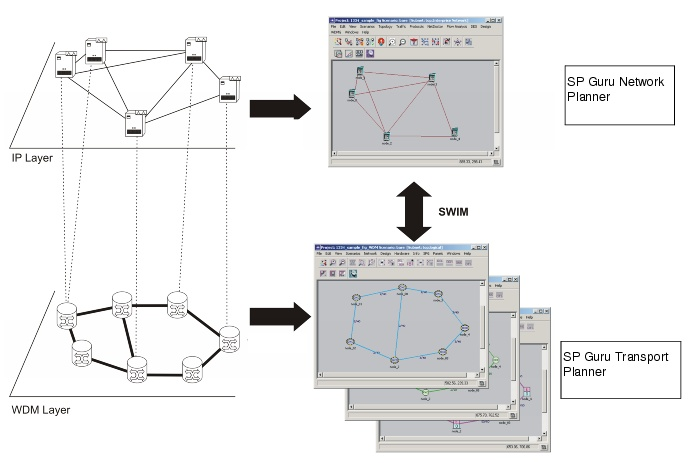

SWIM Overview > Advantages of Multi-Layer Network Design
Advantages of Multi-Layer Network Design
To implement a truly multi-layer design and analysis of such a multi-layered network, you must model the relationship between the IP and transport layers accurately. It is not enough to model each layer independently. In a SWIM network scenario, Layer-2/3 links are supported by transport connections; this means that link attributes depend on the status of the underlying connections. If a transport connection fails (for any reason), any dependent Layer-2/3 link also fails. If a transport connection is running, the routing of that connection affects the IP link delay. A multi-layered design offers the following advantages:
- Realistic Service Level Agreement (SLA) modeling—Because Layer-2/3 link delays are calculated based on the underlying transport network, you can verify SLAs realistically and enforce SLAs using constraint-based routing.
- Multi-layered Failure Analysis studies—A multi-layered design enables you to study how failures in the transport layer affect performance in the Layer-2/3 network, which you cannot do with layer-specific Failure Analysis operations in SP Guru Network Planner or SP Guru Transport Planner alone.
Figure 1-2 SWIM Architecture for Modeling Multi-Layer Networks

| Home © 1987-2007 OPNET Technologies, Inc. All Rights Reserved. This software may be covered by one or more U.S. Patents. See complete patent notice in the Legal Notices section. OPNET Support Center |